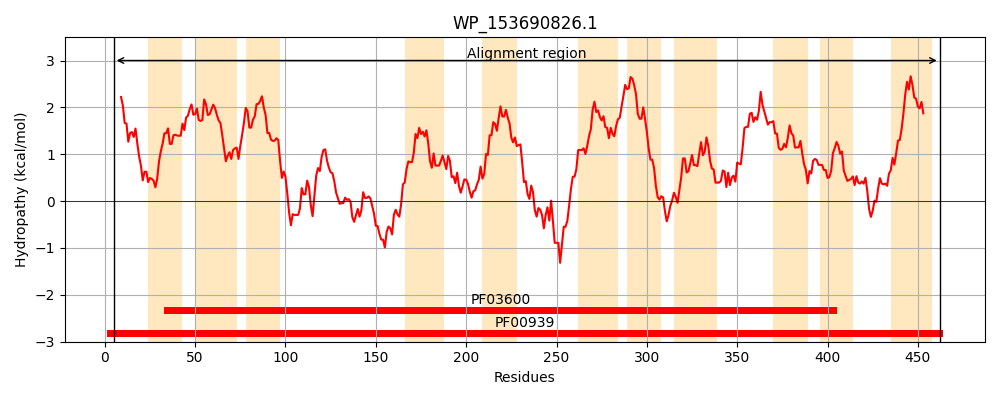
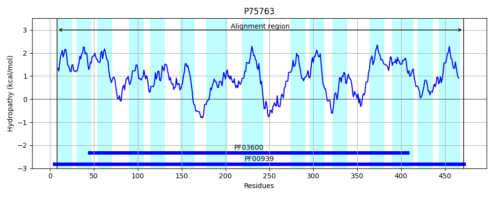
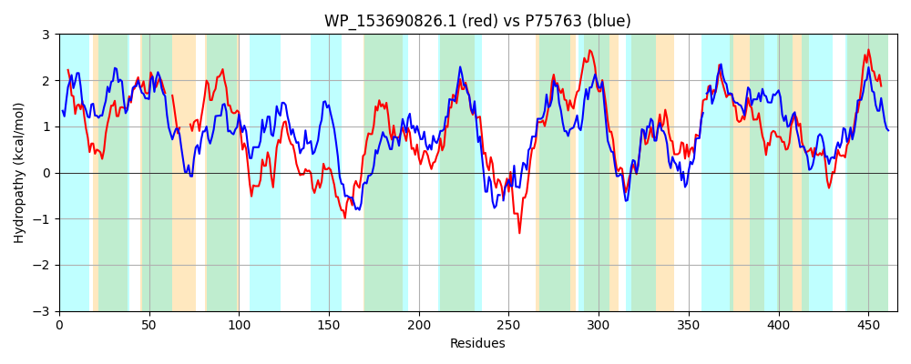

Hit Accession: P75763
Hit TCID: 2.A.47.3.5
Hit Description: gnl|BL_ORD_ID|11403 gnl|TC-DB|P75763|2.A.47.3.5 Inner membrane protein YbhI OS=Escherichia coli (strain K12) GN=ybhI PE=1 SV=1
Mach Len: 466
e:0.000000
Query TMS Count : 11
Hit TMS Count: 15
TMS-Overlap Score: 8.400000
Predicted Substrates:None
BLAST Alignment:
Score: 936 , Bit scores: 365 bits, E-value: 1.9e-122, Alignment length: 466, Percentage identity: 39
Query: 5 KLLPIIFFPVLFWIIPHPEGVAAPTWHMVGIYLAMLCGLVLRPFTDAVIMLIILGFASLV---LDPGP-----LFAGFGSPMVWFIISAFIICKAFVITGLGKRIAYMLLKRYGKNTLTLGYLMMVTDTVLAPATGSNMSRSGGITYPIFRNIAEALGSKPDDGSRKIGAYLTILMYVVSMGTSSLFLTGMATNSITVSLANEIMKVNLEWMTWFKAAVVPAGLVLILAPWILYKIYAPELKVIENVNEIAEKGLNELGPVKREEKLLIVFFILGVLGWMTGSITGIAFIPVGLAFLACLLLFGVLSWNDVVSEKSAWQTFVWYGAFYGCAVALSKGGFYVYLVDVIKNYLDLSHLSEISAIAVLVFISLAVRYFFVSNSAFVVSFYPVLFTLGMTTQAHPMYVALSLAFSAGYGALLTHYGNGAGVFTFSSGYVPQKTFWMLGTIMVVVNVLIFFLIGIPYWKLI 462
KL+ I+ P + +P P G++ W + GIYLA + GLV++PF + V++LI + + +V L G + +G+ S W + SAF + AFV TGLGKRIAY+L+ + G TL LGY+ + D VLAPAT SN +R+GGI PI ++A ALGS+P+ R++G YL + +Y+V+ TS +F T MA N + + + N+I+ + + W W AA +P ++L++ P ++Y +Y PE+K ++N IA+ GL ELGP+K EK+L+ F+L +LGW+ G+ V + +A +LL G+++W DVV K W T +WYG G + LSK F+ +L +V KN L + A V++F+S+ VRYFF S SA++V+ PV L + A M AL+L FS YG ++THYG AG F GY K++W++G ++ ++ L+ +G+ +W ++
Sbjct: 8 KLILILAIPCIIGFMPAPAGLSELAWVLFGIYLAAIVGLVIKPFPEPVVLLIAVAASMVVVGNLSDGAFKTTAVLSGYSSGTTWLVFSAFTLSAAFVTTGLGKRIAYLLIGKIGNTTLGLGYVTVFLDLVLAPATPSNTARAGGIVLPIINSVAVALGSEPEKSPRRVGHYLMMSIYMVTKTTSYMFFTAMAGNILALKMINDILHLQISWGGWALAAGLPGIIMLLVTPLVIYTMYPPEIKKVDN-KTIAKAGLAELGPMKIREKMLLGVFVLALLGWIFSKSLGVDESTVAIVVMATMLLLGIVTWEDVVKNKGGWNTLIWYGGIIGLSSLLSKVKFFEWLAEVFKNNLAFDGHGNV-AFFVIIFLSIIVRYFFASGSAYIVAMLPVFAMLANVSGAPLMLTALALLFSNSYGGMVTHYGGAAGPVIFGVGYNDIKSWWLVGAVLTILTFLVHITLGVWWWNML 471 | Protein Hydropathy Plots: |
|---|
|  |  |
Pairwise Alignment-Hydropathy Plot:
|
|---|
|  |